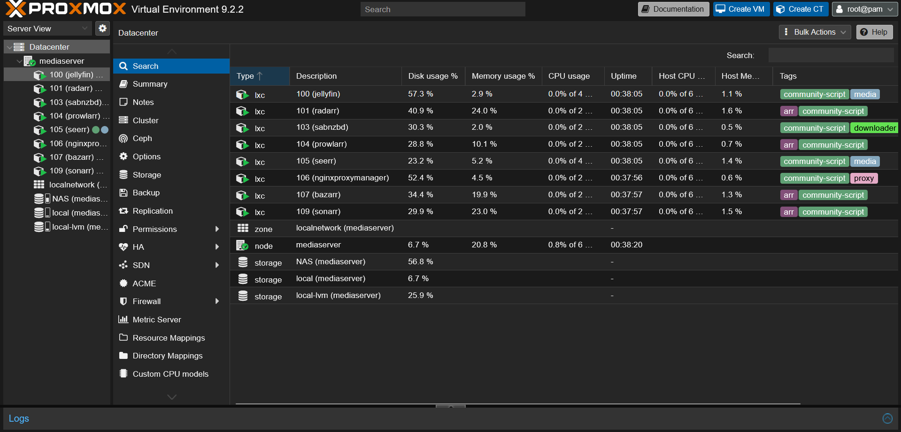
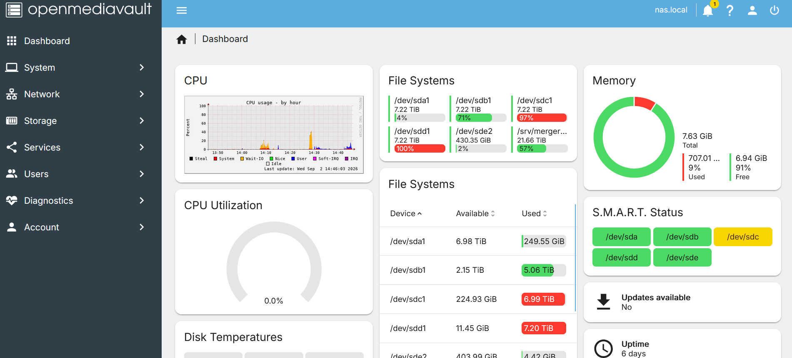

A resilient, event-driven media processing stack hosted on isolated Proxmox VE LXC containers and backed by an OpenMediaVault NFS storage pool with zero-copy hardlinks.

/mnt/storage/downloads/complete/.
/mnt/storage/downloads/complete/ to /mnt/storage/data/media/, and triggers Bazarr to search and download matching subtitles.
/mnt/storage/data/media/, reading structured files over the local network, and rendering streams using Intel QuickSync hardware transcoding.
Configured mergerfs storage pools across OpenMediaVault NFS mounts. By aligning root storage paths, the automation stack issues instant filesystem inode references (hardlinks) from scratch space to production libraries without duplicate disk writes or cross-network copies.
Provisioned Intel QuickSync GPU passthrough into unprivileged Proxmox LXC containers. Configured Linux device node permissions (/dev/dri/renderD128) to execute real-time video transcoding via VAAPI hardware pipelines with minimal CPU overhead.
Routed all ingress control traffic through Nginx Proxy Manager to manage SSL certificates. Internal service communication resides strictly on isolated container subnets, exposing only required reverse proxy ports.
Implemented SnapRAID parity protection alongside mergerfs storage pooling on the OpenMediaVault NAS host, protecting pooled data from single-disk hardware failures.

Proxmox VE datacenter view showcasing isolated LXC containers with low background resource overhead.

OpenMediaVault dashboard displaying 21.6 TB mergerfs-pooled capacity across physical drives alongside real-time S.M.A.R.T. health monitoring.